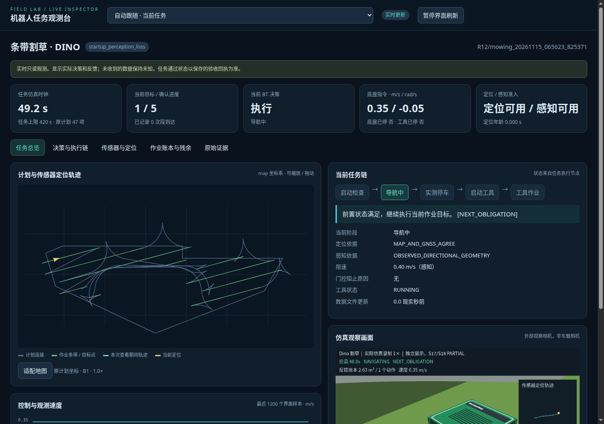

本章目录
第 08 章 从启动命令到三点点喷闭环
本章通过一次真实三点点喷记录，说明一条 Linux 命令怎样启动多进程机器人系统，Python 怎样安排任务，C++ 怎样参与监督与工具执行，以及如何从反馈判断作业真的发生。你可以先在 Windows 阅读并分析附带证据，再切换到已经准备好的 Linux 机器复现。
案例来自固定基线中的 spray_20261115_065207_245639。它在 A1 的原 56 个点中选择前三个，经历一次真实模拟工具卡滞，最终完成 3 个点。它不代表完整 A1 已通过。本章也介绍代码支持的精停分支，但该次三点运行没有触发局部精停移动。
你要先认识的六个词
| 词 |
在本章中的含义 |
不要混淆的对象 |
| 终端 |
输入命令并观察输出的窗口 |
窗口本身不是机器人程序 |
| shell |
解析命令的程序，本机主要使用 Bash |
Python 是另一个解释器 |
| 进程 |
正在运行的程序实例，有自己的 PID 和环境 |
一个源码文件可以被多个进程执行 |
| ROS 节点 |
通过 ROS 通信的参与者 |
节点与进程不一定一一对应 |
| action 动作 |
可以发送目标、接收反馈/结果、申请取消的通信协议 |
发送成功不等于任务完成 |
| 账本 |
保存已确认作业量、残余和工作键的记录 |
计划经过的点数不是确认量 |
先在 Windows 读懂结果
下载学习仓库并解压，直接打开 index.html。若已经安装 Python 3，在教材根目录打开 PowerShell，可以执行：
py -3 examples\inspect_spray.py
py 是 Windows 的 Python 启动器，-3 请求 Python 3，最后是脚本路径。系统没有这个启动器时，先阅读保存的输出和源码，不必为了阅读教材先安装机器人环境。
Linux 下同一个教学脚本使用：
cd /home/ceihao/self_learning
python3 examples/inspect_spray.py
脚本使用标准库 pathlib 和 json。它根据自己的文件位置找到教材证据，不连接 ROS、不启动 Gazebo，也不修改原工程。你应看到：选中 3 个点、完成 3 个点、原目标 56 个；工具失败记录 1 次、残余重试 1 次、幂等重放 1 次；最后车体和工具已停。
这里 JSON 是一个完整结构化文档，JSONL 是每一行一个 JSON 对象的事件流。结果文件适合回答“最终怎样”，事件文件适合回答“中间怎么走到这个结果”。
在 Linux 启动之前检查什么
下面的仿真命令适用于当前已经准备好的原工程，工作目录是 /home/ceihao/robot_project，而不是学习仓库。新机器要先准备环境与资源。
在终端一逐条执行：
cd /home/ceihao/robot_project
pwd
test -f optimization_v2/maps/frozen/map.db
echo $?
test -x optimization_v2/venvs/scene/bin/python
echo $?
bash optimization_v2/three_tasks/advance.sh R09 check
echo $?
| 命令 |
逐项解释 |
应该怎样理解输出 |
cd /home/ceihao/robot_project |
cd 是 Bash 内建命令，改变当前 shell 的工作目录 |
路径不存在就先解决目录问题 |
pwd |
显示当前工作目录 |
应显示原机器人工程路径 |
test -f 路径 |
检查路径是否是普通文件；通常不输出文字 |
只能证明存在，不能证明地图内容正确 |
test -x 路径 |
检查文件是否具有执行访问权限 |
不能替代解释器依赖检查 |
echo $? |
显示紧接上一条命令的退出码 |
0 通常表示该检查满足条件；应立即查看 |
R09 check |
调用项目的 R09 回执和文件哈希检查 |
本机基线预期 PASS 和退出码 0 |
$? 会被下一条命令覆盖，所以不要执行多条无关命令后再用它判断原检查。test 的 0/1 与项目脚本的 0/2 属于各自程序的约定，不能把所有非零码解释成同一种故障。
本章 record spray 的前置实际是 R09，因此 R10 当前 PARTIAL 不会单独禁止这个短案例。另一方面，R09 回执存在但绑定文件被改动，也会被前置检查拒绝。对应实现是 common.require() 和 stage_r12.record()。
两个终端分别做什么
终端一启动实时 GUI：
cd /home/ceihao/robot_project
bash optimization_v2/three_tasks/gui.sh
浏览器打开 http://127.0.0.1:8088。127.0.0.1 指正在使用浏览器的那台电脑本身；8088 是服务端口。GUI 终端会持续运行，这是服务器等待请求的正常状态。
终端二启动三点点喷：
cd /home/ceihao/robot_project
bash optimization_v2/three_tasks/advance.sh R12 record spray
这条命令会启动真实仿真、录制和分析，并生成新的运行目录。同一时刻只运行一个机器人案例。当前案例声明的上限是 300 仿真秒，运行器另设现实时间预算；保存的示例用了 92.786 仿真秒、约 242.68 秒任务墙钟，不能保证你每次都用相同时间。
正常情况下，GUI 自动跟随新运行。先观察启动定位与传感器准入，再看目标序号、导航、停车、工具工作和账本变化。定位尚未有效时等待是有条件的行为，不应通过手动发速度强行跳过。
把启动命令拆到每一层
bash 明确要求 Bash 执行脚本；脚本路径相对当前目录解析。R12、record、spray 是传给项目程序的三个字符串，分别表示录像交付阶段、录制动作、三点工具卡滞案例。它们不是 Linux 内置关键词。
下面是实际启动脚本的关键部分：advance.sh
set -Eeuo pipefail
r_base="$(cd -- "$(dirname -- "${BASH_SOURCE[0]}")/.." && pwd -P)"
source "$r_base/env.sh"
export OMP_NUM_THREADS=1 OPENBLAS_NUM_THREADS=1
exec "$r_base/venvs/scene/bin/python" "$r_base/ws/src/task_platform/scripts/dispatch.py" "$@"
set -Eeuo pipefail 开启较严格的错误行为：-e 在适用的失败场景退出，-u 检查未设置变量，pipefail 让管道中的失败不被最后一项成功掩盖，-E 影响 ERR trap 的继承。Bash 的这些选项有语法上下文例外，不能把它们当成完整异常处理。实际任务仍需要自己的超时和 finally 收尾。
${BASH_SOURCE[0]} 是当前脚本路径；dirname 取其所在目录；/.. 回到上一层；$(...) 是命令替换，把里面命令的输出放进字符串；pwd -P 取物理目录。双引号避免包含空格或中文的路径被拆成多个参数。-- 用来结束选项解析，让后面的路径按路径处理。
source 在当前 shell 里执行环境脚本，因此后续程序能继承其中设置的环境变量。用 bash env.sh 会在另一个 shell 中执行，其环境修改通常不会传回当前 shell。该项目的 env.sh 会清理旧工作区环境，加载 Jazzy 和当前 overlay，并设置 domain 等变量。
export 将变量放入后续子进程环境。这里限制部分数值库线程数，减少线程竞争；它不是限制所有 ROS 节点只能使用一个 CPU 核。
exec 用指定 Python 程序替换当前 shell 进程，"$@" 按原参数边界转交所有参数。指定虚拟环境里的完整解释器路径，可以避免无意中使用另一个 Conda 或 Python 环境。
Python 怎样找到这个任务
dispatch.py 使用 argparse 读取 stage、command 和剩余参数。R12 决定导入 stage_r12，随后调用 main('record', ['spray'])。这是模块分派：把文本命令映射到相应 Python 模块和函数。
stage_r12.py 的 CASES['spray'] 声明 task='spray'、case='tool_jam'、point_limit=3、seconds=300。因此本例不是“默认运行全部点”，也不是根据文件名猜出故障类型。案例定义
阶段程序还核对运行器来源和派生哈希。点喷录像采用 prepare_spray_video_r12.py 从 R10 运行器确定性生成的版本，增加观测录制及对应传输配置。这里“派生”是脚本处理源码并记录来源，不是 Python 类继承。它让录像适配有独立版本，旧运行器仍可追溯。
importlib 把确定的运行器文件加载为 Python 模块；runtime.run(...) 才真正开始仿真。源文件和生成文件的哈希不一致时应重建并复验相关版本，不能删除核查语句来继续。
运行器为什么要启动很多进程
runtime_spray_r10.py 负责组成世界、记录 spec 和绑定、设置环境、启动 Gazebo、传感器处理、里程计、区域定位、感知、Nav2、工具、账本、任务以及独立评估进程。
subprocess.Popen([...], env=..., cwd=..., stdout=..., start_new_session=True) 表示启动一个子进程，指定环境、工作目录和日志输出。参数列表逐项传递给程序，通常不需要把它们拼成 shell 字符串。start_new_session=True 使运行器能按自己的会话管理退出。它只拥有自己启动的进程，不应通过系统范围的 killall 清理所有 ROS 程序。
运行器还建立 session.lock，防止两套任务同时占用同一实验环境。进程已启动与传感器已就绪是两件事，因此还要等待就绪文件、服务和定位条件。
输出目录包括：
| 文件或目录 |
用途 |
spec.json |
任务范围、时限、传感器和代码绑定 |
mission.json |
本次计划和任务配置 |
live.json |
最近任务状态，供 GUI 等读取 |
mission_events.jsonl |
带仿真时间的动作和状态事件 |
reference/live.json |
区域定位和 GNSS 监督状态 |
control/gate.jsonl |
候选命令、允许/拒绝和实测停车 |
ledger/ledger.sqlite |
反馈确认的作业账本 |
mission_result.json |
任务完成量、失败与停止状态 |
runtime.json |
进程退出、强制终止及运行资源检查 |
recording_acceptance.json |
任务和录像的分项检查 |
video/full.mp4 |
这次运行的完整实际记录 |
每次运行创建独立目录，旧证据不会因为你又运行一次就变成新版本证据。
任务状态机怎样等待真实消息
mission_spray_r10.main() 创建 ROS 节点和三个动作客户端：导航到点、沿路径运动、工具工作。它订阅 /clock、BT 指令、门控、定位、工具状态和反馈，将最近值保存到 st 字典中。任务源码
字典适合把具名状态放在一起，例如 st['phase'] 表示阶段，st['loc'] 保存最近定位消息。订阅回调中的 lambda m, k=key: ... 使用默认参数固定当前 key，避免循环结束后所有回调都引用最后一个 key。
等待不是简单睡够若干秒。实际 wait() 反复调用 tick()，tick() 内执行 rclpy.spin_once()，让消息回调继续更新状态，同时检查停止请求和时限。若等待期间不处理回调，程序可能永远等不到已经到达通信队列的结果。
Future 表示一个将来完成的异步结果。future.done() 检查结果是否到达；future.result() 读取已经返回的内容。导航目标被接受、导航最终成功、实测停止、工具准入，是不同的状态，需要分别检查。
局部 helper 使用 nonlocal active_nav 时，表示要更新外围 main() 里的活动导航句柄，而不是新建一个同名局部变量。这个句柄让异常收尾知道是否还需要取消动作。
从导航到有效喷洒
执行一个点的主逻辑可以概括如下。这是阅读用伪代码，实际源码还包含重验证、超时与拒绝处理：
等待导航和工具服务器就绪，等待可信定位
对选中的每个目标点：
申请 NavigateToPose，持续读取 BT 和定位状态
导航结束后确认实测停车
收集静止定位窗口；必要时申请有界局部精停
申请 POINT_SERVICE，继续响应取消和停止
读取工具结果与账本
若失败且停止没有不确定性，等待恢复并按同一工作键补残余
只有 SUCCEEDED 才把该点加入完成列表
最后关闭工具、确认停车、保存结果
点任务一般使用 NavigateToPose，因为目标是一个服务位姿，Nav2 可规划接近路径。需要短距离精停时，程序先构造并检查局部路径，再使用 FollowPath。两种动作承担不同职责，不是简单二选一。
静止定位窗口为什么比一个点可靠
实际 stable_dock() 至少要求 20 个样本、时间跨度 1.8 秒、最大采样间隔 0.15 秒；中位位置到目标不超过 0.035 m，最新位置不超过 0.045 m，位置散布 p95 不超过 0.015 m。精停判据
中位位置用于降低个别样本影响；最新位置约束避免“过去平均接近、现在已经离开”；散布约束要求观测在停止期间稳定。样本数量、时间跨度和最大间隔共同防止用短时间重复值假装长时间稳定。
这次第二个点的最新距离约 0.03632 m，大于中位位置门限 0.035 m，但仍小于最新位置门限 0.045 m；中位距离约 0.03254 m，所以该次窗口可以通过。不同字段对应不同判据，不能只挑一个数字比较。
底盘门控为什么仍要独立检查
Python mission 申请动作，不直接发布最终底盘执行命令。Nav2 输出候选速度，control_spray_r10.py 检查消息新鲜度、定位、地形、BT、工具与运动约束，再发布 /s03/actuator/request。
当 BT 要求 EXECUTE 但感知过期，门控仍可以停止。GUI 中“当前决策”“原始速度”“门控后速度”“停止原因”要一起看。工具服务器也独立控制 /s10/tool/command，导航线程无权把账本完成量直接加一。
C++ 核心逻辑的一个小例子
以实际生产头文件 precision_progress.hpp 为例，它把已验证精停动作的进展尺度与预计移动距离联系起来。
inline double progressDelta(const nlohmann::json& cfg,
const nlohmann::json& e) {
const double coarse = cfg.at("progress_delta_m").get<double>();
if (!cfg.contains("precision_progress_policy") ||
e.value("motion_scope", std::string()) != "VALIDATED_LOCAL_DOCKING" ||
!e.contains("expected_translation_m") ||
!e["expected_translation_m"].is_number()) return coarse;
const double distance = e["expected_translation_m"].get<double>();
if (!std::isfinite(distance) || distance <= .008 || distance > .15)
return coarse;
return std::min(coarse, std::max(.005, .25 * distance));
}
上面为同一函数的换行排版，逻辑与冻结头文件一致。double 表示浮点数；const ...& 通过只读引用接收 JSON 对象；.at() 读取必须存在的键，缺键会抛异常；.value() 可在键不存在时返回给定默认值；.get<double>() 把 JSON 数值转成 C++ double。默认值不会自动修复已有字段的错误类型。
inline 允许这种函数定义放在头文件中被多个翻译单元使用，不保证编译器一定把所有调用展开。外层 namespace r10 用于组织名字；#pragma once 避免同一头文件在一个编译单元里被重复包含。
原粗尺度为 0.10 m。对于已经通过验证、预计平移 0.036 m 的精停：
0.25 × 0.036 m = 0.009 m
max(0.005 m, 0.009 m) = 0.009 m
min(0.10 m, 0.009 m) = 0.009 m
因此进展要求是 9 mm。动作范围不匹配、距离非有限或越界时返回原粗尺度。这不是把所有导航都改成毫米级判据，也不会改变工具位置准入；10 秒无进展超时仍由 BT 其他部分控制。BT 派生、BT 判据
要理解 C++ 的编译过程，可在学习目录执行：
cd /home/ceihao/self_learning
mkdir -p build
g++ -std=c++17 -Wall -Wextra -pedantic examples/precision_demo.cpp -o build/precision_demo
./build/precision_demo
mkdir -p 创建目录并允许其已存在；g++ 是 C++ 编译器驱动；-std=c++17 选择语言标准；告警选项帮助发现可疑写法；-o 指定输出可执行文件。./ 表示执行当前目录下的文件，Linux 一般不会默认在当前目录搜索任意命令。
本例直接包含教材冻结的生产头文件并使用本机已有 nlohmann/json 头文件；没有启动 ROS。它显示普通动作 0.100 m、合格精停 0.009 m、越界动作回退 0.100 m。该函数调用不能替代真实运动或完整 BT 测试。教学程序
工具服务器与账本怎样配合
tool_goal() 创建 ToolTask.Goal：操作为 POINT_SERVICE，包含任务标识、地图/计划/工具版本、目标、请求数量和超时。幂等键由计划版本和点 ID 组成，表示“这一次计划里的这个工作”，而不是每次请求都换一个新工作。动作协议
C++ 工具服务器使用动作接口接收请求，向账本保留工作键，确认准入后发工具命令，持续检查新鲜反馈，达到确认量或遇到故障时开始停止。请求停止后还要检查物理反馈，若无法确认则保留 uncertainty，不能自动当作可安全补作。基础工具实现和阶段派生
SQLite 账本保存确认量和事务状态。它只接纳符合时间、位姿、工具和任务条件的反馈，所以原始计量器增加值与有效确认剂量不必完全相同。这里的“剂量单位”是仿真定义的计量单位，没有依据把它写成毫升。
幂等性的含义是：重复提交同一个已完成工作键，返回已经确认的结果，而不是再次喷洒。部分失败则保留残余和停止状态，只有满足恢复条件时才补作。这与简单“失败就重新完整喷一次”有本质的计量差异。
用实际时间线检查上面的解释
下面时间全部是仿真秒，来自任务事件和故障注入记录。
| 仿真秒 |
实际事件 |
怎样理解 |
| 8.002 |
COARSE_PUBLIC_PLAN_HINT |
发送公开计划附近的粗初值，仍需观测匹配 |
| 19.206 |
第一个 NAV_GOAL |
导航生命周期已确认活动，发出第一个点目标 |
| 22.500 |
第一个 DOCKING_SETTLED_CHECK |
61 样本、1.8 秒窗口，静止检查通过 |
| 26.574 |
第一个 TOOL_RESULT |
确认 3.044 单位，点状态 SUCCEEDED |
| 26.622 |
幂等重放 |
返回已确认结果；计量器前后都是 3.2337 |
| 45.450 |
注入 JAM，持续到 48.450 |
声明的模拟执行器故障，没有修改车辆位姿 |
| 46.392 |
第二点工具结果 FAILED / TOOL_HEALTH |
有效确认 0，残余 3.0，停止无不确定标志 |
| 46.410 |
RESIDUAL_RETRY |
开始等待恢复、重新确认停车与定位条件 |
| 55.866 |
第二点工具成功 |
确认 3.074 单位 |
| 90.758 |
第三点工具成功 |
确认 3.052 单位 |
| 90.780 |
SUBSET_FINISHED |
选中 3、完成 3、原目标 56 |
| 92.786 |
FINAL_TOOL_STOP |
工具最终 STOPPED |
第一次 NAV_GOAL 与 NAV_SUCCESS 在这次记录里很接近，不代表普遍的导航速度；场景起点与第一个目标接近时，导航可能很快结束。判断是否真的完成工作仍要看后续静止观察、工具和反馈。
第二点的第一次原始计量器从 3.2337 增加到 3.3613，但有效确认量为 0。这提醒你分别阅读模拟计量、有效作业条件和账本，不应把任意计量增加都算成有效喷洒。
怎样在 GUI 里对应检查

这张截图来自同一项目的割草启动故障运行，用于说明页面布局；本章点喷应在任务下拉框中选择相应点喷运行，不能把截图当作点喷记录。
| GUI 页面 |
查看内容 |
要回答的问题 |
| 任务总览 |
任务类型、阶段、目标索引、轨迹、原任务数量 |
现在在哪一步？当前目标序号是不是完成数？ |
| 决策与执行链 |
BT 动作、原因、资格与事件 |
为什么等待或取消？后续是否确认停止？ |
| 传感器与定位 |
频率、时间年龄、定位质量、相机和点云 |
数据更新了吗？更新的数据是否也有效？ |
| 作业账本与残余 |
工作键、确认量、残余、不确定状态 |
失败之后保留了什么？是否重复作业？ |
| 原始证据 |
实际 JSON 字段和版本 |
页面显示能否追溯到数据？ |
历史模式显示保存的末次状态与事件窗口，不能逐帧重建没有保存的原始传感器。实时传感器预览只属于匹配的活动运行；空白点云不表示前方没有障碍。暂停界面刷新只冻结显示，不暂停机器人。GUI 数据聚合、只读订阅
用 ROS 命令看实际数据
任务运行期间，在第三个 Linux 终端执行：
cd /home/ceihao/robot_project
source optimization_v2/env.sh
ros2 node list
ros2 topic list
timeout 8s ros2 topic echo /s05/odometry --once
timeout 8s ros2 topic echo /r06/directive --once
timeout 8s ros2 topic echo /r07/gate --once
新终端不会自动继承另一个终端执行过的 source，因此要加载环境。ros2 node list 查询可发现节点；ros2 topic list 查询话题。echo --once 接收一次消息后退出；timeout 8s 给这个观察命令加现实时间上限，超时只停止观察命令，不表示要求机器人停车。
域、QoS 或发布状态不匹配都可能导致看不到消息；没有消息不能立即证明传感器损坏。先查看任务是否运行、当前 domain 和节点状态，再检查实际话题类型与 QoS。
本章完整新任务不会在编写资料时再次启动；上面是当前基线已存在的人工观察路径。重新运行得到新的时间和结果应分别保存。
如何停止和读取结果
需要中断时，在任务终端按 Ctrl+C，然后等待任务取消、车体与工具停止、结果保存和进程退出。关闭 GUI 窗口不会停止任务；只关闭任务窗口也不利于观察收尾。停止是否成功以反馈和退出记录判断。
查看最近三点录制回执可执行：
cd /home/ceihao/robot_project
python3 -m json.tool optimization_v2/three_tasks/results/R12/spray_latest.json
python3 -m json.tool 使用标准库把 JSON 格式化输出，不修改该文件。回执的 path 指向这一次运行目录；spray_latest.json 是 JSON 指针文件，不是 Linux 软链接。重新录制后它会指向新目录，教材案例则固定保存在学习仓库中。
还要看 mission_result.json 的完成列表、runtime.json 的退出情况、recording_acceptance.json 的任务与录像分项。有些受控终止路径进程可以正常退出，但任务仍未完成；进程退出码不能单独证明完成全部作业。
在当前基线运行 bash optimization_v2/three_tasks/advance.sh R12 check 会因为上游 R10/R11 PARTIAL 返回 2。这不是让你重装 ROS 的指示，也不否认三点短演示通过。应该阅读 pending 和 changed：前者表示阶段缺项，后者表示文件与封存证据是否改变。
三个容易误判的场景
第一，机器人停在目标附近但不喷洒。先看实测停止、定位窗口、BT 和工具准入；距离肉眼很近不等于满足所有条件。
第二，工具故障后再次工作。检查工作键、停止不确定标志和残余，不应只凭“又喷了一次”判断重复计量。
第三，视频里任务完整结束。确认所选范围：三点演示的完整执行不等于 56 点全部完成，录像时间线完整也不保证任务指标全部通过。
自测与答案
- 为什么
source env.sh 与 bash env.sh 的效果不同？前者修改当前 shell 环境，后者的环境通常只存在于子 shell 及其后代。
- 看到 NAV_SUCCESS 能否直接把点记为完成？不能；还要停车、静止观察、工具和账本确认。
- 本例为什么只完成三个点？
CASES['spray'] 明确设置 point_limit=3，原 56 点保留。
- 为什么重放结果 confirmed 仍为 3.044，却没有再次喷洒？它返回同一工作键的既有确认，计量器前后不变。
- 第二点第一次计量器增加了，为什么 confirmed 为 0？有效作业还有反馈健康、时间和任务准入等条件，原始累计量不直接等于有效剂量。
- 精停公式算出 9 mm，能否用于所有导航？不能；范围与距离校验通过才使用，粗导航和其他门限保持原规则。
- 本例是否验证了局部精停移动？没有，事件中没有 LOCAL_DOCK_GOAL；相关代码与其他证据另行说明。
- 点喷短演示通过后，R12 是否必定 PASS？不必；阶段还要求上游完整任务等条件。
完成练习后，建议回到架构图，把每个新认识的函数放回其层级，再进入定位、感知和规划章节。
固定生产代码逐段阅读
下面是固定提交中的原样节选。完整文件有离线行号页；片段可能省略上下文，不能单独当成可运行脚本。读完每段后，回到调用者确认它在当前任务中如何使用。
precision_progress.hpp 第 1 至 17 行
离线带行号源码 · 固定 Git 提交
#pragma once
#include <nlohmann/json.hpp>
#include <algorithm>
#include <cmath>
namespace r10 {
// Match progress scale to an explicitly validated, bounded precision motion.
// The 10 s timeout, emergency priority and original work admission stay intact.
inline double progressDelta(const nlohmann::json& cfg,const nlohmann::json& e) {
const double coarse=cfg.at("progress_delta_m").get<double>();
if (!cfg.contains("precision_progress_policy") ||
e.value("motion_scope",std::string())!="VALIDATED_LOCAL_DOCKING" ||
!e.contains("expected_translation_m") || !e["expected_translation_m"].is_number()) return coarse;
const double distance=e["expected_translation_m"].get<double>();
if (!std::isfinite(distance) || distance<=.008 || distance>.15) return coarse;
return std::min(coarse,std::max(.005,.25*distance));
}
}
与样章已有解读一致，保留一个独立可编译的真实判据入口。这个函数只返回距离尺度，不能独自证明超时、碰撞或工具反馈正确。
本章练习核心代码与实际输出
完整教学脚本 · 本章完整输出
代码只使用 Python 标准库；合成输入与历史记录在输出 kind 中区分。公共 ROOT、read、wrap、connected 等辅助函数在完整脚本中定义。
def lab08():
"""Execute the existing L01 real-evidence walkthrough."""
r=subprocess.run([sys.executable,str(ROOT/'examples/inspect_spray.py')],
capture_output=True,text=True,timeout=10)
assert r.returncode==0, r.stderr
return dict(kind='historical evidence',output=r.stdout.strip())
{
"chapter": "08",
"passed": true,
"result": {
"kind": "historical evidence",
"output": "selected=3 completed=3 original=56\ntool_failed_attempts=1 residual_retries=1 idempotent_replays=1\nreplay_meter_before=3.2337 after=3.2337\nlocal_dock_goals=0\nstopped=True tool_stopped=True\nsim_seconds=92.786 task_wall_seconds=242.678\ntask_passed=True video_valid=True\nScope: historical selected three-point case; original A1 has 56 obligations."
}
}
本章例子可以在 Windows 使用 py -3 或在 Linux 使用 python3 重跑。它验证局部概念或读取历史证据，不对机器人全任务提供新通过结论。